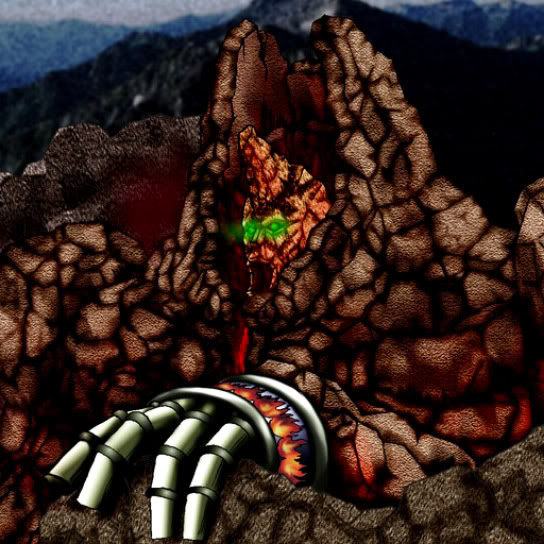

Molten Behemoth

Description: "The power of all your PYRO monsters increases 500 points while this card is face-up in the defense position."
STATS
ATK: 1000
DEF: 2200DECK COST
Deck Cost per Card: 37EFFECT NOT IMPLEMENTED
Fusion List (2 Possible Fusions)
- Molten Behemoth + Hibikime = Flame Swordsman
- Molten Behemoth + Takuhee = Crimson Sunbird